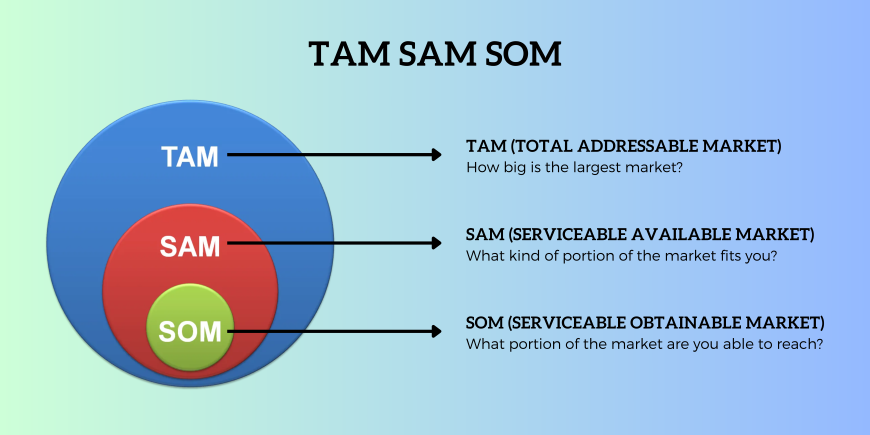

BLOG 6: Exploring TAM, SAM, and SOM: The Market Opportunity for Adoptable
Market sizing is a crucial process for evaluating the potential opportunities within a market. It typically involves three key metrics: TAM (Total Addressable Market), SAM (Serviceable Available Market), and SOM (Serviceable Obtainable Market). Here's a breakdown of these metrics and how they are used:
TAM (Total Addressable Market)
- Definition: The total revenue opportunity available if your product or service captures 100% of the market. TAM represents the largest possible market size.
- Purpose: Helps to understand the full potential of the market, even if it's unlikely you'll achieve full penetration.
- Calculation:
- Top-down: Use industry reports, market data, or research firms to estimate the total market size.
- Bottom-up: Calculate based on the number of potential customers multiplied by the revenue per customer.
- Connection to our app (Adoptable): The total number of potential adopters in Cagayan de Oro who might adopt pets or work with shelters to facilitate adoptions.
- Includes:
- All households interested in adopting pets.
- Local shelters and rescuers in the area.
- Example Calculation:
- If Cagayan de Oro has 250,000 households and 10% are open to pet adoption, TAM = 250, 000 × 10% = 25, 000 households.
SAM (Serviceable Available Market)
- Definition: The portion of TAM that is relevant to your specific business, based on your product's or service's capabilities and geographic or demographic focus.
- Purpose: Refines TAM to reflect what your company can realistically target.
- Calculation:
- Top-down: Narrow TAM to reflect the subset of customers that align with your operational and product-specific focus.
- Connection to our app (Adoptable): The portion of TAM that fits within your operational focus:
- Includes:
- Households in Cagayan de Oro with access to the internet and mobile apps.
- Pet shelters and rescuers in the city willing to partner with your app.
- Example Calculation:
- If 70% of these households have internet access and are reachable via your app, SAM = 25, 000 × 70% = 17, 500 households.
SOM (Serviceable Obtainable Market)
- Definition: The portion of SAM that you can realistically capture, considering your competitive position, resources, and time frame.
- Purpose: Offers a practical assessment of your short- to medium-term revenue potential.
- Calculation:
- Consider market penetration rates, competitive dynamics, and your marketing/sales capacity.
- Connection to our app (Adoptable): The percentage of the SAM that you can realistically capture, based on your app's competitive positioning and resources.
- Includes:
- Reflects the users your app can acquire in its first few years.
- Consider your marketing budget, partnerships with local shelters, and your ability to scale features like "people-to-people" adoptions and community-building functions.
- Example Calculation:
- If you estimate capturing 10% of the SAM in the first two years, SOM = 5M × 10% =500, 000 users.
Core Learnings
- Understanding Market Potential:
As I’ve learned, TAM, SAM, and SOM are powerful tools for assessing market opportunities. They’ve been crucial in shaping Adoptable’s growth strategy and understanding the potential reach of the platform. - Technology for Social Good:
Through Adoptable, I’ve realized how digital platforms can transform social impact. By making pet adoption more accessible and efficient, technology is helping us create a stronger sense of community and connection. - Sustainability Matters:
A strong revenue model is essential for long-term success. Passion for the mission must be balanced with a sustainable financial strategy to ensure we can continue making a difference in the community.